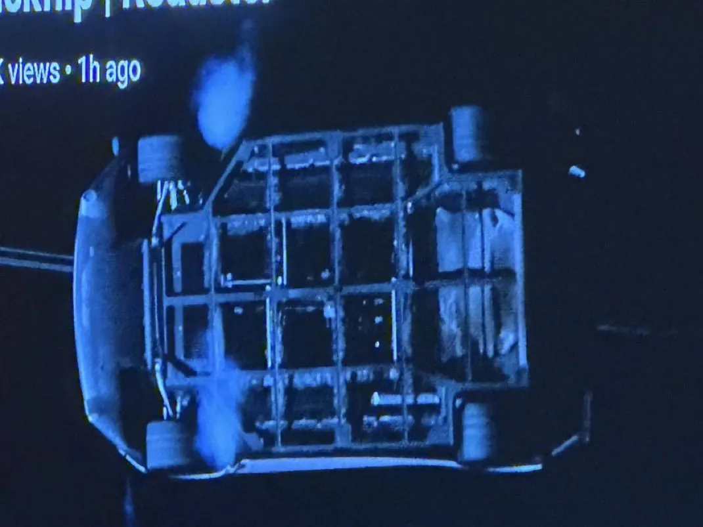
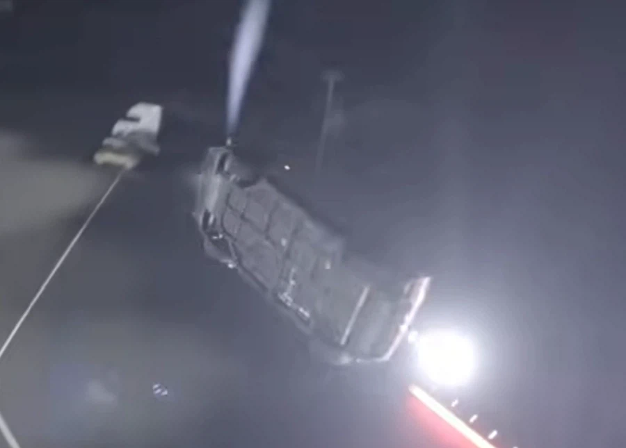

이거만 가져와서 뭐라하는데

멀쩡히 다 차있음

이거만 가져와서 뭐라하는데

멀쩡히 다 차있음
컨셉카 시범용에 뭘 그렇개 따지는건지 ㅋㅋㅋ 신차발표회도 아닌데
옴니아폰 쓰는 병신들이 아이폰 욕하는모습하고 비슷함
아이폰하고 와이파이 어따쓰냐고 개지랄을 했었는데ㅋㅋ
2007년 아이폰 나왔는데
자칭 얼리어답터들은
정부가 삼성을 위해 아이폰 걸어 잠그고
쇄국해서 우리나라 기술경쟁에서
도태 될거라고 개지랄 떨었지
그리고 몇년 뒤 좆구린 옴니아 폰 나오니까
기다려 줬더니 시발 기껏 이거냐고
또 지랄 했지
근데 지금 애플하고 경쟁하는
그럴듯한 스마트폰 만드는 나라 한국뿐이잖아?
게다가 스마트폰 팔아 번돈 반도체도 선순환 하고
좆구린 삼성폰 사준 사람들은
병신이 아니라 애국자였고
국내 기업 살려준 현명한 투자가였음
병신 지랄은 아이폰 빨던 앱등이들이 한거였지
지금 현기차 까면서 FSD 안푼다 욕하는
테슬람들이 지랄이지
중국하고 손잡아 원가 낮춰 한국차 죽이려는
테슬라 막아야 하는건 당연히 할일임
뭔 개쌉소리이지 ㅋㅋㅋ 당시 언플은 대기업이 다했는데 뭔 ㅋㅋㅋ 옴니아2 올려치기는 언론이랑 기업이 나서서했고 아이폰이 와이파이 쓰면 통신사 다 망한다면서 들여오면 안된다도 기업이 했지
소비자가 그거 생각해줄 이유가 뭔데? 이상한데서 국가주의 들이미네
개쩌는건 마찬가지라고
아니 더 쩌는데? 난 공기를 빨아들일려고 아래가 비어있는지 알았는데 어디로 빨아들이는거야?
빙그르르 도는 균형잡는게 우주선 도킹할때 공기 뿜으면서 맞추는 느낌이었어